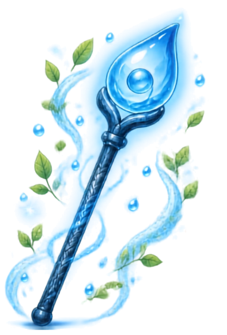

¿Verdadero o falso?
¡Guardianes, ha llegado el momento de demostrar cuánto saben! 🦅💧
Blue les presenta algunas situaciones que ocurren en la casa, la escuela y el campo. Lee cada afirmación con atención y decide si es Verdadera (V) o Falsa (F).
Recuerda: cada gota cuenta. ¡Ayuda a Blue a evitar que Verti siga creciendo!
¡Misión cumplida, Guardián!
¡Lo lograste! 🎉 Ahora sabes reconocer las buenas y malas prácticas en el uso del agua. Cada decisión que tomas ayuda a Blue a recuperar su fuerza y evita que Verti siga creciendo.
🏅 ¡Has ganado la insignia de Guardián en formación!
Sigue cuidando cada gota… ¡Blue cuenta contigo para la próxima misión! 💙💧
